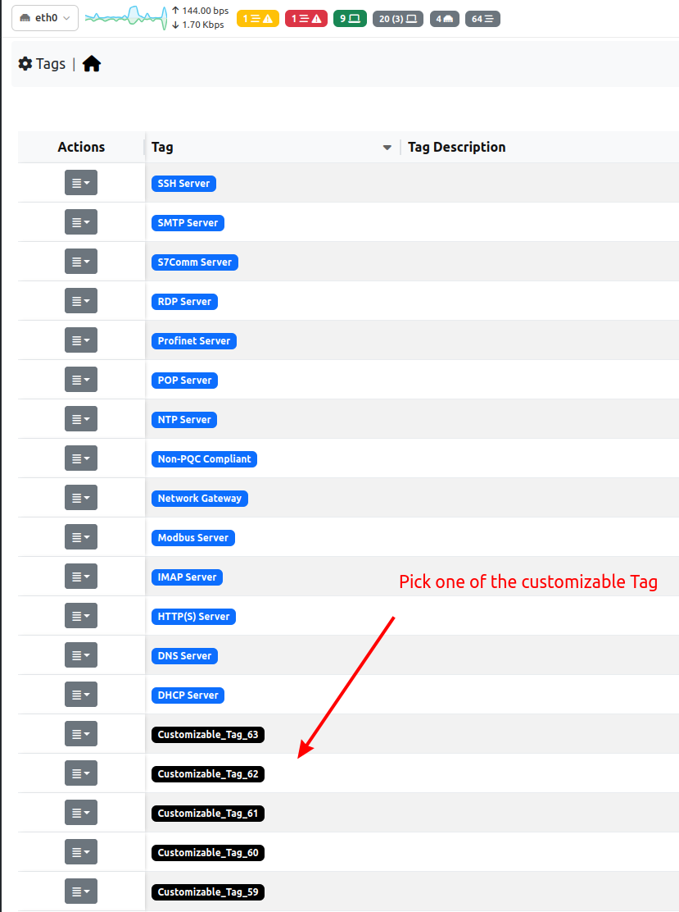
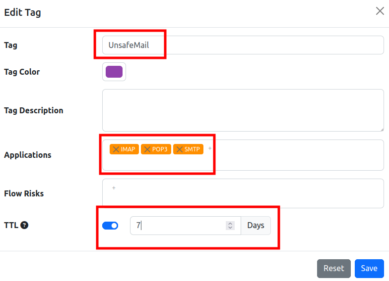
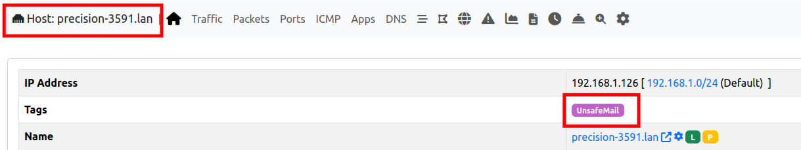

Tags
Tags are colored labels that can be attached to hosts and are used to group, identify or annotate assets on the monitored network. A host can carry one or more tags. They are shown as colored badges next to the host through the UI, and can be used to filter which alerts get delivered to a given notification recipient.
Internally, tags are implemented as a 64-bit bitmap associated with each host, thus the number of available tags is:
32 (Bits 0-31) reserved for built-in tags, which ntopng assigns automatically based on what it observes on the network.
32 (Bits 32-63) for user-defined tags, which administrators create, name and assign manually.
Both kinds of tags are managed from the same Tags page, reachable from the Settings section of the System interface, which lists every tag together with its name, color and description.
Application- and Risk-Based Tagging
Note
Enterprise L license or above is required
In addition to manual assignment, a user-defined tag can be bound to one or more network applications (i.e. nDPI protocols) and/or one or more flow risks, directly from the tag edit dialog. Once one or more applications and/or flow risks are associated with a tag, ntopng starts tagging automatically: every time a flow is classified as one of the linked applications, or raises one of the linked flow risks, the flow itself is immediately tagged, and the same tag is persistently assigned to the flow’s local client host, exactly as if it had been set by hand from that host’s configuration page. Flow risks work exactly like applications in every other respect described below.
From that moment on the tag behaves just like any other user-defined tag and is visible wherever tags normally appear: on the matching flows in the Live Flows and Historical Flows pages, on the client host in the Hosts and Host Details pages and, being now an ordinary host tag, on the corresponding entry in the assets database - so the Assets page can be filtered by that tag to list every asset that has been observed using the linked application(s).
This effectively turns a tag into a standing rule (“tag every host that talks a given application”) that is kept up to date automatically, rather than a one-off manual annotation, making it a convenient way to build an inventory of hosts by behavior rather than by identity.
Example: a network administrator wants to spot which PCs on the LAN are still accessing mail servers in plaintext instead of over the encrypted protocols the same mail server also supports - typically a sign of a misconfigured or outdated mail client.
From the Tags page, pick one of the customizable tags (e.g.
Customizable_Tag_62) and click its edit (gear) icon.
Rename it to
UnsafeMail, pick a color, and in the Applications field addIMAP,POP3andSMTP, leaving their encrypted counterparts (IMAPS,POPS,SMTPS) out. Enable the TTL and set it to7days (see Asset Tag Expiration (TTL)). Save.
As soon as any host on the network exchanges mail over one of the three plaintext protocols, ntopng tags both the flow and the client host
UnsafeMail- visible right away on that host’s Host Details page.
Open the Assets page and filter by the
UnsafeMailtag to get the full, always up-to-date list of misconfigured hosts network-wide, without having to hunt for them manually in the flow tables.
The administrator then reconfigures the mail clients one by one. No further action is needed in ntopng: thanks to the TTL, a PC that stops using the plaintext protocols loses the
UnsafeMailtag about 7 days after its last plaintext mail flow, and disappears from the filtered list by itself. A PC that has not been fixed (or that has been misconfigured again) keeps the tag, as every new plaintext mail flow refreshes it. The filtered Assets page therefore always shows the work still to be done, rather than every host that has ever used plaintext mail.Without a TTL the tag would stay on those assets forever, and the list could only grow: the administrator would have to remove the tag by hand from every fixed host, or could not tell the fixed hosts from the ones still to be fixed.
Asset Tag Expiration (TTL)
Note
Enterprise L license or above is required
The assets inventory remembers the hosts seen on the network, together with their tags, long after those hosts have stopped doing what earned them a tag. By default a tag stays on an asset forever: a host that was a DNS server one year ago, or that once used an outdated application, is still listed as such. This is the right behaviour for tags used as permanent annotations, but it makes tags describing a behaviour less and less accurate over time.
The TTL (Time To Live) of a tag tells for how long the tag is kept on an asset when nothing confirms it anymore. It is set in the tag edit dialog, in days (from 1 to 365), for both built-in and user-defined tags. When the TTL is disabled (the default) the tag never expires.
To set the same TTL on many tags at once, use the Set TTL button at the bottom of the Tags page. The TTL is set on all the tags or, when All Tags is disabled, on the selected ones.
A tag on an asset is refreshed every time ntopng has a new evidence of it:
for the server tags (DNS Server, HTTP Server, …), when the host is observed providing that service again;
for the Non PQC Compliant tag, when a new non-Post-Quantum-safe flow of the host is detected;
for the Operating System tags (see Operating System Tags), when the same Operating System is detected again, e.g. when the host opens a new TCP connection;
for the tags bound to applications or flow risks (see Application- and Risk-Based Tagging), when a new matching flow of the host is detected;
for the tags assigned by hand, when the tag is assigned. Nothing refreshes them afterwards, so a tag assigned by hand with a TTL is a temporary annotation that removes itself (e.g. “under maintenance” for a week).
If a tag is not refreshed for longer than its TTL, it is removed from the asset. For example, with a TTL of 30 days on the DNS Server tag, an asset that has not been seen answering DNS queries for 30 days is no longer listed as a DNS server; if it starts again, the tag is back. Every tag added to or removed from an asset, with its cause, is recorded in the assets journal.
Things worth knowing:
Tags assigned because the host is listed in the Network Configuration (DNS, NTP, DHCP, SMTP, SSH, RDP, PowerShell and FTP servers, Windows Domain Controllers, network gateway) never expire as long as the host is listed there, whatever the TTL. If the host is removed from the configuration, the tag expires as any other.
The TTL is in days and the expiration is checked periodically: a tag can be removed up to half a day later than its TTL, never earlier.
The expiration is about the assets, not the hosts. For the latter, the previously described rules apply.
An Operating System tag that expires is removed from the asset, but the Operating System reported for the asset is not changed. The tag is back as soon as the Operating System is detected again.
With a license below Enterprise L the TTL is not available, and the tags of an asset simply are the tags of its host.